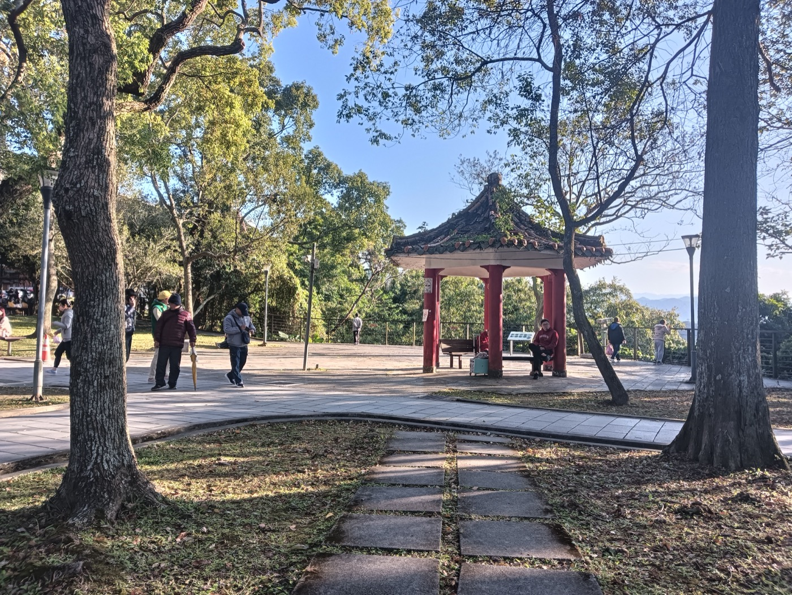

桃竹苗為什麼適合做「第二段行程」
從臺北出發，往桃園、新竹、苗栗延伸，通常能在一天內切換都會補給、丘陵山線與海岸三種體驗。對露營車而言，這代表你要更早確認營位是否允許大型車、迴轉空間是否足夠，以免傍晚入營時壓力最大。
官方觀光資訊怎麼用
桃園市政府觀光旅遊局網站整理大溪、拉拉山、海岸等主題；新竹縣旅遊網適合規劃內灣、關西與山線小鎮；苗栗縣文化觀光局則涵蓋泰安、南庄、海線等多元路線。這些資訊可用來找「景點密度」，但是否可停露營車仍需回到營區規定。
山林與自然保育
若行程含森林遊樂區或自然步道，請同步查台灣山林悠遊網與現場公告；部分區域對車輛進出、火源與承載量有季節性限制。保育與安全不是口號，而是決定你能不能「照表操課」完成旅程。
與揪好森的搭配
若你正在規劃租露營車桃園或新竹延伸行程，揪好森在桃園、新竹具送車洽詢空間，適合把桃竹苗當成主要遊程或從露營車出租台北出發的過境地。建議把營區清單列好後，再與我們確認里程、租露營車費用、台灣露營車出租價格方案與還車動線；車款為自走式大型露營車出租，入營前務必確認迴車與限高。
參考與延伸閱讀
- 交通部觀光署｜Taiwan.net.tw（國內旅遊總入口、活動與安全宣導）
- 北海岸及觀音山國家風景區管理處
- 桃園市政府觀光旅遊局
- 新竹縣旅遊網
- 苗栗縣政府文化觀光局
- 台灣山林悠遊網｜農業部林業及自然保育署
- 交通部高速公路局
- 交通部公路總局（用路安全與道路養護資訊）
- YouTube 搜尋｜高速公路局相關宣導影片（請交叉比對官方來源）
- Wikimedia Commons（本文章首圖為可授權再利用之開放內容，僅作主題示意）
| 問題 | 為什麼重要 | 好的回覆長怎樣 | 若回覆模糊 | 下一步 |
|---|---|---|---|---|
| 營位長寬與迴轉 | 避免到場無法入位 | 提供尺寸表或照片 | 只說「很大」 | 改問入口寬度 |
| 外接電規格 | 冷氣與家電安全 | 安培數、插座型式 | 說「有電」但不講規格 | 帶轉接與線材照片確認 |
| 補水與排水 | 生活品質核心 | 明確時間與位置 | 禁止任意排污 | 閱讀使用教學 |
| 海拔與氣溫 | 影響睡眠與用電 | 夜間溫差提醒 | 沒概念 | 查中央氣象署 |
| 鄰近醫療與補給 | 帶長輩／孩童時 | 最近醫院與超商 | 資訊缺 | 自行標註地圖 |
#桃園露營區 #新竹露營 #苗栗露營 #露營車營位 #桃竹苗旅遊 #觀光局 #揪好森 #外接電 #親子 #山線